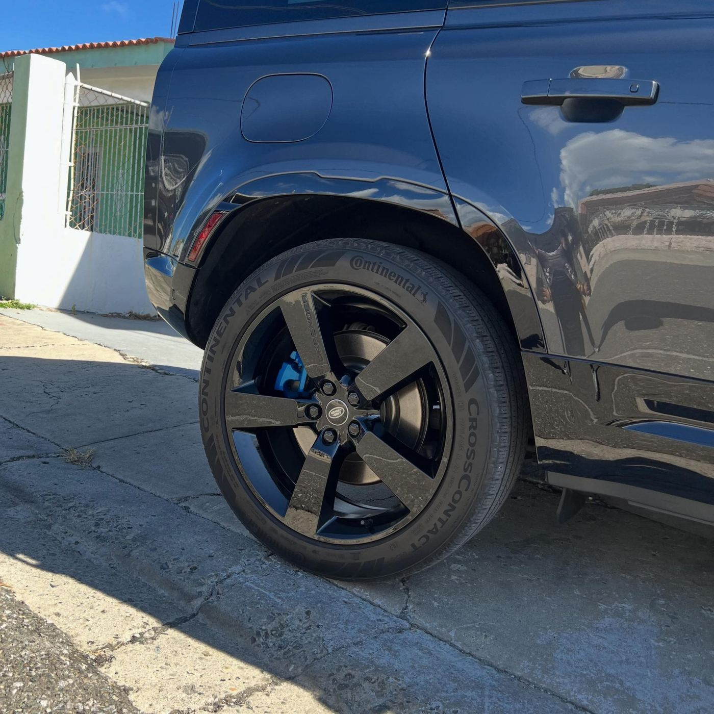

Pintura de calipers
Nuestra especialidad. Pintamos los calipers de tu vehículo en el color que quieras para darle ese look agresivo que pide. Citas al 787-318-1059.
Pintura de calipers, powder coating y cerámicos con acabado de exhibición.
Trabajos reales
Fotos reales de nuestro taller en Salinas. Toca cualquier foto para verla en grande.

Lo que hacemos
Nuestra especialidad. Pintamos los calipers de tu vehículo en el color que quieras para darle ese look agresivo que pide. Citas al 787-318-1059.
Powder coating de aros y todo tipo de piezas. Recogemos piezas y entregamos a toda la isla, y también puedes traer el vehículo directo al taller.
Tratamiento cerámico con pulido previo de un paso: brillo profundo y protección duradera para la pintura de tu carro.
Pintura de accesorios, emblemas y logos de fábrica. Le damos el toque final a cada detalle de tu vehículo.
Nivelación de clear y pulido profesional. Recuperamos brillo y profundidad aun en pinturas con años encima.
Restauración de focos con clear de alta duración para mejor apariencia y que el resultado dure años, no meses.
De principio a fin
Cada trabajo sigue el camino del sol del sur: arranca abajo, sube al punto más exigente y baja bañado en brillo. Toca cada fase.
Orgullo del sur
Best Detailer on South side of PR — reseña real de un cliente
Desde el sector Coco en Salinas: calipers, powder coating y cerámicos hechos con calma, detalle y el sol del sur de testigo.
Llamar +1 787-318-1059Preguntas frecuentes
Contacto
Escríbenos o llámanos — te confirmamos la cita y cotizamos tu servicio.
Pintura de calipers, powder coating y cerámico — reserva hoy mismo.
WhatsApp: 787-318-1059 Llamar ahoraOferta por tiempo limitado
Te construimos una página profesional como esta para que tus clientes te encuentren y te escriban directo.
Solo Web
$300
$99
Web + Arranque
$600
$150
La más elegida
Tranquilidad Total
$1,000
$200
Un año de tranquilidad.
Quiero Tranquilidad TotalOferta por tiempo limitado · 3 planes disponibles